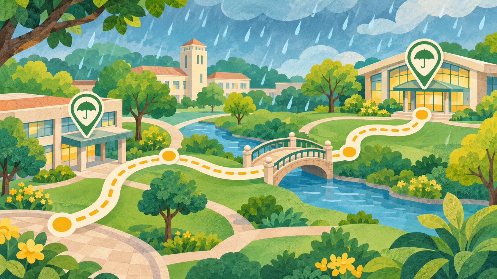
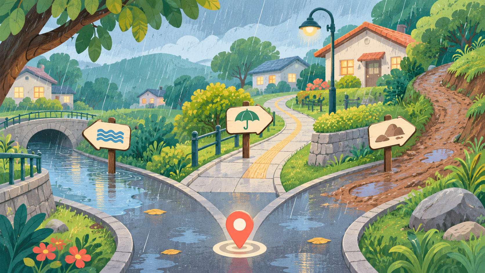

RALLY · EQUIPOS
Escape de la tormenta
Resuelva retos sobre rutas seguras, mochila de emergencia y decisiones ante la lluvia.
APRENDA JUGANDO
Explore las dinámicas disponibles y elija la que mejor se adapte a su grupo.
COLECCIÓN DE ACTIVIDADES

Resuelva retos sobre rutas seguras, mochila de emergencia y decisiones ante la lluvia.

Seleccione una opción y observe cómo cambia el recorrido ante una situación de lluvia.

Reconozca los artículos indispensables para prepararse ante una tormenta.